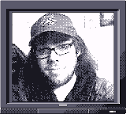

*********************** * Shining Kitten History * ***********************
Shining Kitten Games is a fully remote indie game development studio founded by Matthew Trucks and Stephen Allen in 2022.
This team of aspiring developers has mostly dabbled in original Game Boy games, as well as a handful of short, experimental games. There is always something in the works at SKG, so keep an eye out!
**************** * Meet the team! * ****************

Lead Graphic Designer | Developer Co-Founder
**************** * Matthew Trucks * **************** A CIS student from Alabama, Matthew was introduced to computers at a very young age. With a love for technology and video games, he's always wanted to create worlds that will make people feel the same way he felt playing them. He also plays the ukulele!
************** * Stephen Allen * ************** Stephen is an IT professional situated in Virginia, seeking to break into the game industry. He is currently getting his Bachelor's in Game Design, and hopes to craft stories that people will enjoy!